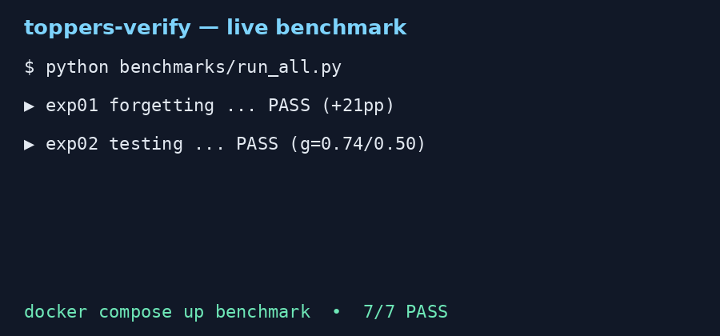
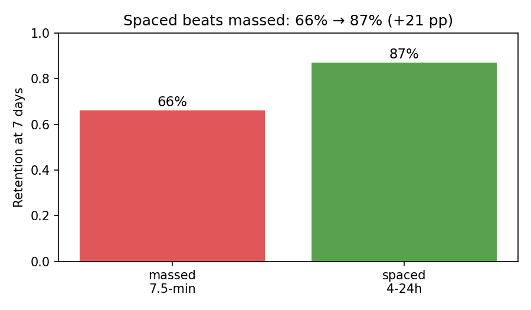
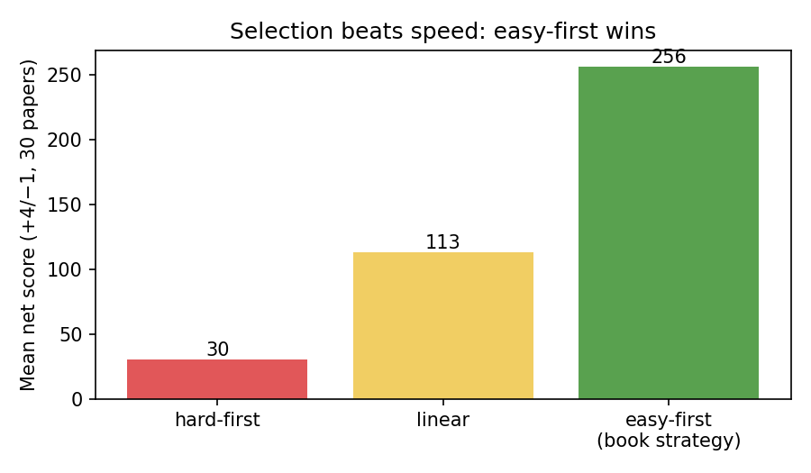
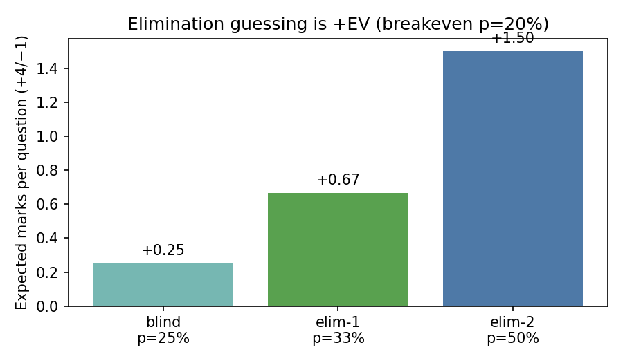
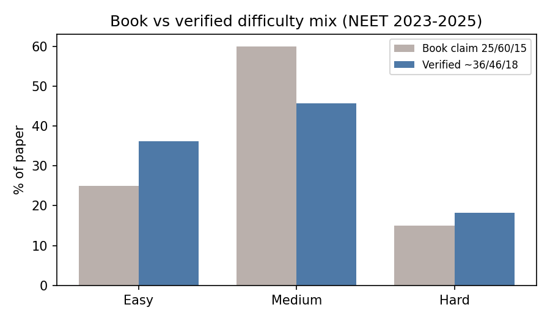

🌱 Beginner guide — read this and you are a professional
Let's work this out in a step-by-step way to be sure we have the right answer. Imagine your preparation as a pipeline with five valves. Most students open only the first valve (learn more). Rank comes from opening all five, especially the last ones.
Step 0 — Measure today (15 minutes)
Take one past paper under exam rules. Compute 5 numbers with src/metrics.py: speed = time ÷ attempted, effective speed = time ÷ correct, strike rate = correct ÷ attempted, M/T = marks ÷ minute per subject, success gap = cutoff − scored. Write them down. You cannot improve what you do not measure.
Step 1 — Learn in levels (L1 → L2 → L3)
Never jump to hard problems first. Solve easy ones fully, then medium, then hard — consulting theory between rounds. Draw the diagram before writing equations (physics). Work symbol-first, plug numbers last. Two spaced attempts before peeking at solutions.
Step 2 — Space and retrieve
Review after ~1 day, ~7 days, ~30 days (one valid ladder of the 10–20% rule: gap ≈ 10–20% of the horizon). Study 45–60 minutes, break 5–10 minutes (walk, water, stretch — not feeds). Revise before sleep; learn new things when fresh. Replace rereading with self-testing: close the book and recall.
Step 3 — Triage the paper
Browse 5–10 minutes. Do easy + medium first (they are ~82% of items and ~80% of marks). Mark hard ones “try again” and return with leftover 10–15% time. Batch-mark answers per section. Under +4/−1, killing even one option makes guessing +EV (breakeven p = 20%). Skipping beyond that controls variance, not expectation.
Step 4 — Analyse every mock 1–2 hours
Classify each miss: calculation (more timed reps), confusion (relearn concept), coverage (fill topic). Classify each skip: time / confusion / coverage. Track M/T per subject; move ~10 minutes from lowest to highest M/T and re-test.
Worked mini-example (book table, reproduced exactly)
200 questions, 174 attempted, 136 correct, 150 minutes → speed 51.72 s/q, effective 66.18 s/correct, strike 78.16%, net 506 under +4/−1. Run python experiments/exp04_speed_strike_selection.py to see it recomputed.
🎬 60-second demo
Looping terminal run (scripted, regenerable). Full video script lives in docs/assets/demo.tape; rendered loop below.

Can't see the animation? The same run is text in benchmarks/results/summary.json. Short clips (MP4/WebM) can be rendered from the same tape for social posts.
What you will see live




✨ Features — everything in one place
speed, effective speed, strike rate, M/T, success gap, net score. Pure functions + unit tests.
Ebbinghaus-shape demo, 7-day retention table, 10–20% gap planner, effect-size → U3 converter.
Linear vs easy-first vs hard-first under a 180-min budget with verified time/success priors.
Closed-form + 200k-trial Monte Carlo for +4/−1. Breakeven p = 20%.
NEET/JEE 2023–2025 difficulty + cutoff snapshot, book-vs-verified diff.
Public student data (live fetch or labelled synthetic fallback). Honest tie reported.
docker compose up benchmark — sequential, no keys, JSON evidence.Works offline, deployable to GitHub Pages from
docs/.User stories — who is this for?
| You are… | Do this | You get |
|---|---|---|
| Student, 3 months to exam | Run beginner steps 0–4 + weekly mock | A personal M/T table and a triage order that fits your speed |
| Teacher / coach | Use the quiz + triage simulator in class | A 45-min lesson where students feel why easy-first wins |
| Parent | Read CEO summary + sleep/break rules | How to help without adding pressure (routine, sleep, logistics) |
| Researcher (PhD track) | Read report §6 falsifiers, pre-register RCT | Five killable hypotheses (P1–P5) with gates |
| Contributor | Regenerate assets, add a year of telemetry | CI-green PR with new JSON evidence |
🎯 Interactive quiz — from scratch to pro (10 questions)
Answer each one. You get the right answer, why, and the step-by-step immediately — that instant feedback is the study technique. Levels: 🌱 Scratch (1–3) → 🛠 Practitioner (4–7) → 🏆 Pro (8–10).
⚙️ Reproduce everything in 3 steps
python -m venv .venv && source .venv/bin/activate pip install -r requirements.txt pytest -q && python benchmarks/run_all.py && cat benchmarks/results/summary.json
Docker: docker compose up benchmark (services: benchmark one-shot gate, lab interactive shell). Regenerate visuals: python docs/assets/generate_assets.py. Data audit: python benchmarks/run_all.py --audit-data.
Enable GitHub Pages for this site (2026 flow)
- Push this repo to GitHub (default branch
main). - Open Settings → Pages. Under Build and deployment → Source choose Deploy from a branch.
- Select branch
mainand folder/docs, Save. Within ~1–2 min the Actions run goes green and the lab is live at home/and lab/preview.html(mirror:/docs/preview.htmlwhen source is root). - Optional (CI deploy): keep
.github/workflows/pages.yml(static upload ofdocs/). No build step needed — pure static HTML + PNG + GIF. - Custom domain (optional): add
docs/CNAMEwith your domain, then point DNS as Pages instructs.
📄 Full research report (preserved, uncut)
The complete publishable-grade write-up lives in README.md (abstract → methods → 7 experiments → 5 hidden patterns P1–P5 → zero-to-hero protocol → threats/limits → references). This page is the friendly front door; the README is the citable record. Key numbers: retrieval g≈0.50 / spaced-retrieval g=0.74 / overall mean g=0.56 (169,179 learners); interleaving medians +50%/+125% (physics); NEET verified mix ~36/46/18; qualifying cutoffs percentile-based 117–162/720 (volatile).